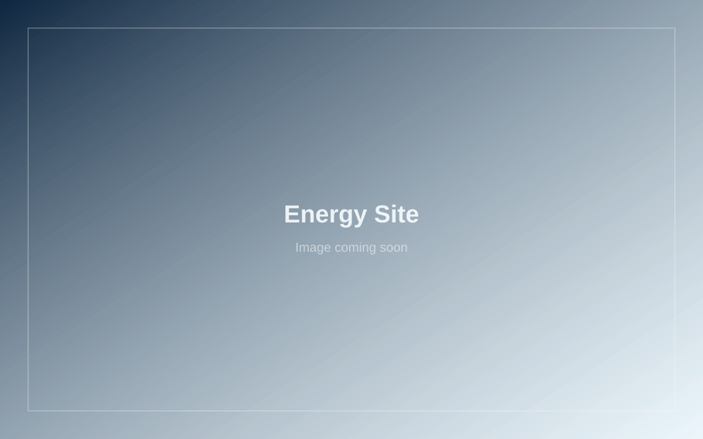

Analytics & AI · Feb 2024 – Mar 2024
Energy Site Selection
Queried and visualized U.S. energy data to identify regions with high renewable potential and diverse generation profiles.

Challenge
Stakeholders needed a clear geographic picture of fossil vs renewable generation to guide sustainable energy investment decisions.
Solution
Built SQL-backed Tableau views covering energy by state, renewable share by region, source trends over time, and hourly renewable patterns for California vs Northwest.
Screenshots


Outcome
DashboardsGuided investment planning
SQLQueryable generation data
TableauStakeholder-ready views